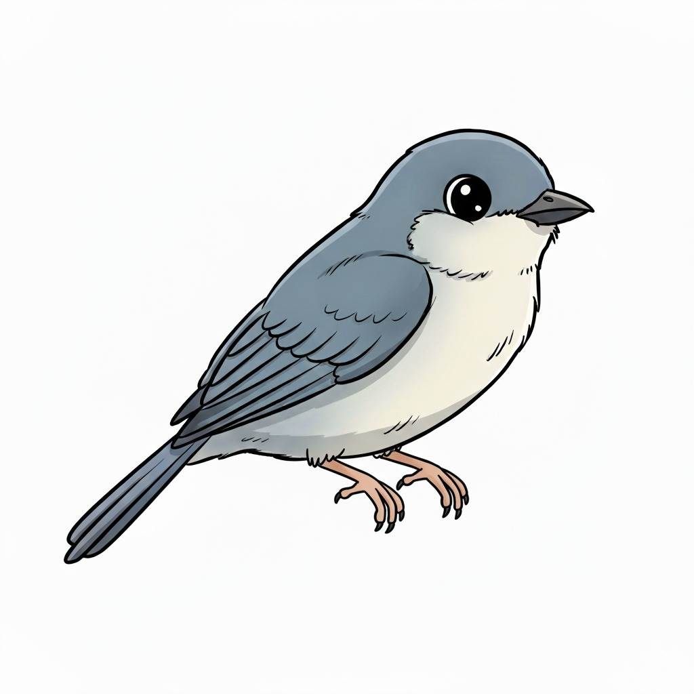

Você Sabia?
Os manguezais são berçários naturais! Muitas aves, como eu, dependem deles para encontrar alimento e abrigo seguro.
O que é um Manguezal?
O manguezal é um ecossistema costeiro, de transição entre os ambientes terrestre e marinho. É típico de regiões tropicais e subtropicais.
Por que são importantes?
Eles atuam como "berçários" para espécies marinhas, protegem a costa contra a erosão e tempestades, e filtram poluentes da água.
Legenda
Saudável: Área preservada.
Requer Atenção: Área sob pressão.
Crítico: Área com degradação.